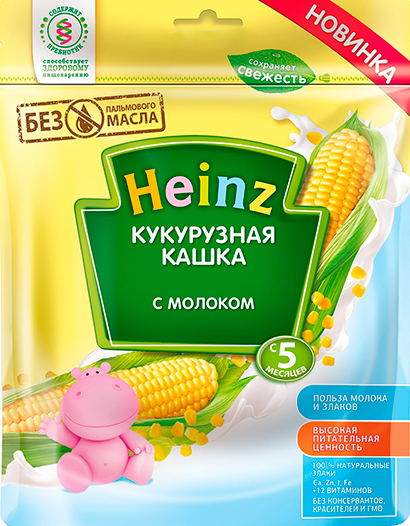

БЕСПЛАТНАЯ ДОСТАВКА ПО НИЖНЕМУ НОВГОРОДУ ПРИ ЗАКАЗЕ ОТ 300 РУБ

полезное детское питание
и не только
и не только
8 800-000-00-00

Продукт детского питания для питания детей раннего возраста, продукт прикорма на зерно-молочной основе, каша молочная сухая быстрорастворимая "Кукурузная кашка с молоком"
Состав: кукурузная мука (46%), сухое цельное молоко (41%), сахар (10,6%), пребиотические волокна цикория (инулин), витамины и минеральные вещества.
Продукт содержит молоко и может содержать незначительное количество глютена.
Кашка понравилась! Быстро готовится, упаковка удобная, нам хватает раз на 20))